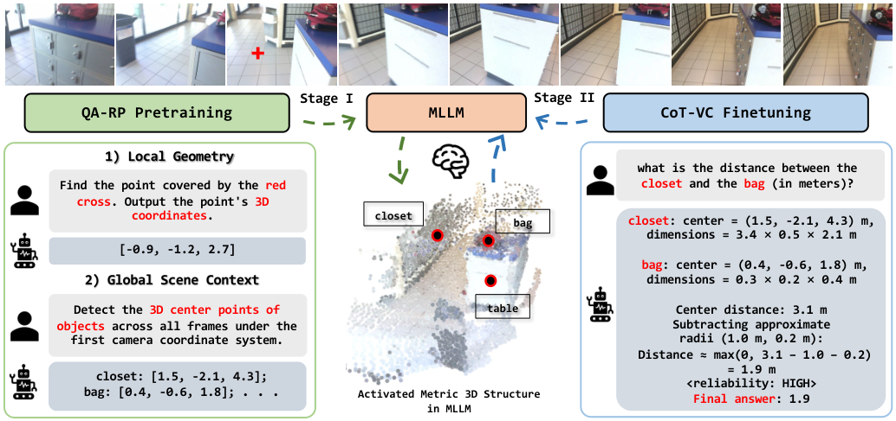

Paper Analysis
01 · Task and Geometric Vocabulary
这篇论文回答的是多视角空间问答：输入一段 RGB 视频和语言问题，输出数量、距离、尺寸或关系等文本答案。相机位姿和深度用于构建训练目标，不作为所有测试问题都具备的真值输入。它不是逐帧更新地图的流式重建系统，也没有提出长期记忆读写模块。
先区分两个层次：几何特征能让语言模型获得空间线索，但正确回答最终问题，并不保证它学会了中间的坐标估计与计算。作者的假设是，先学会表达多视几何，再监督如何使用这些估计，可能比只用最终答案训练更有效。
Pointmap 是为图像像素关联三维坐标；metric scale 表示这些坐标有物理尺度。Shared coordinate frame 则要求来自不同帧的点能直接比较。这里统一选择首帧相机坐标系，避免把不同相机下的两个坐标直接相减。
Paper Analysis
02 · Reading the Original Architecture

Yang Cao et al. · Original figure, unmodified · Copyright retained by authors; arXiv non-exclusive distribution license; limited scholarly quotation · Paper & Caption ↗
原图从几何学习走到空间推理，但两阶段共享问答接口。底座沿用 VG-LLM 思路：视觉编码器提取图像 token，冻结 VGGT 联合处理多帧并提供几何特征，融合后经 projector 输入 Qwen3-VL-4B。论文描述训练语言模型参数，冻结视觉编码器、几何编码器和 projector。
因此，QA-native 的意思是把三维监督写成语言模型需要预测的 token 序列，不是去掉几何编码器。阶段一输出点坐标或对象中心列表；阶段二输出几何估计、推导、可靠性标签与答案。两者接口一致，减少几何只存在于外部预测头、语言解码器从未学习读取它的隔离。
图中示例用于说明流程，不能单独视为真实泛化效果。机制的支撑证据应看后面的训练组件消融。
Paper Analysis
03 · Local Points and Global Object Centers
局部任务在某帧标红一个像素，让模型预测它在首帧坐标系的三维位置。构造监督时，深度乘相机内参逆得到相机空间点，再用相对外参转换坐标。它训练的是把图像局部位置与实际空间位置联系起来。
全局任务枚举跨帧可见对象实例，输出语义类别和三维中心。顺序按首次出现时间，再按图像中的空间次序确定，以减少同一个集合有多种正确序列造成的训练歧义。类别相同的实例仍需要分别列出；类别名称不是实例身份。
两个任务都采用 next-token prediction。下式是对文中目标的简写：y_l 为局部坐标文本，y_g 为对象列表，I 为多帧输入。它没有额外的欧氏坐标回归损失；所以“数字文本预测正确”与“连续几何误差很小”的关系仍需实验检验。
L_I = E_local[-log p(y_l | I, q_l)] + E_global[-log p(y_g | I, q_g)]
Paper Analysis
04 · Reasoning Targets and Visual Compensation
阶段二为距离、尺寸、计数、最近对象四类问题构造确定性的推理模板。距离先用两实例中心距离减去近似半径，再截断到非负值。r 是包围盒平均半边长，故这只是对表面最短距离的近似，不是精确网格间距离。尺寸用最长包围盒边，计数用实例数，最近对象用近似距离排序。
在训练数据构造时，作者将几何推导值与问答真值比较，生成 High 或 Low 标签。High 时继续用几何答案；Low 时附加视觉修订语句，并以真值答案作为监督。推理时没有真值帮助判定可靠性，这个判断需要模型自己预测。
因此 visual compensation 不应被理解为一个经过校准的外部错误检测器。结果说明这种监督格式有帮助，但并未单独证明输出 Low 时模型确实进行了可追踪的视觉再检查。相对方向等未覆盖模板的问题仍保留直接答案监督。
d_cp = max(0, ||c_1 - c_2||_2 - r_1 - r_2)
Paper Analysis
05 · Training and Inference
阶段一基于 ScanNet 的深度与外参、对象标注构建重建 QA；阶段二结合原有视频/空间问答数据与新构造的 CoT。普通数据设置使用 LLaVA-Hound 对应的 LLaVA-Video 子集和 SPAR 子集；扩大设置额外纳入 VLM-3R 与 VSI-590K 等，不能把两个设置的分数混成同一预算。
两阶段均采样每视频 32 帧，使用 8 张 H800、各训练 1 epoch。阶段一全局 batch 32、学习率 5e-6，阶段二 batch 64、学习率 1e-5；附录列出 weight decay 0.01、warm-up 0.03。作者仓库目前只提供说明，未发布训练代码，所以冻结路径在本笔记中依据论文与配置表，未声称已逐行验证实现。
推理把多帧图像与问题一起编码后自回归生成答案。它依赖当前给定帧集合，不报告因果逐帧写入、固定 memory 容量或在线重建吞吐量。
Paper Analysis
06 · What the Ablations Establish
最有信息量的是 ReVSI 的四格对照。只加重建预训练从 52.4 到 55.9，只加 CoT-VC 到 55.0，联合后为 62.8。由表中数据计算，CoT-VC 的边际收益从 2.6 增至 6.9，差为 4.3 点；这支持两阶段互补，但不等于完成了跨随机种子的显著性检验。
完整模型去掉全局查询为 59.9，去掉局部查询为 59.3，说明两类几何目标均有贡献。保留 QA-RP，只去掉 visual compensation 为 58.5，相比完整模型低 4.3 点；这里比较的是训练目标改变后的整模型表现，不是一个完全固定推理链上的运行时模块替换。
| QA-RP | CoT-VC | ReVSI Average ↑ |
|---|---|---|
| No | No | 52.4 |
| Yes | No | 55.9 |
| No | Yes | 55.0 |
| Yes | Yes | 62.8 |
Paper Analysis
07 · Reconstruction and Benchmark Boundaries
在 200 个训练外 ScanNet 验证场景，未对齐时 SpatialSpeak 的 accuracy/completeness 误差为 8.9/9.3 cm，CUT3R 为 13.7/12.7 cm。真值 Sim(3) 对齐后，SpatialSpeak 为 5.0/5.0，CUT3R 为 4.7/4.6。Sim(3) 消除全局旋转、平移和尺度差异，因此前者更好的未对齐结果不能推导为局部形状精度全面超过 CUT3R。
空间问答方面，ReVSI 平均分 62.8 高于表中 SpatialStack-4B 的 54.1，但 absolute distance 的 70.2 低于 GeoThinker-8B 的 71.5，object size 的 62.5 也不是最佳。平均分不代表逐类别都胜出。VSI-Bench 普通设置 63.3、扩大设置 73.0，应该连同数据规模分别引用。
Paper Analysis
08 · Implications for Semantic-Geometric Memory
对当前研究最有价值的不是再增加一个特征分支，而是给 memory 的“可读性”定义监督：历史对象或局部几何能否被稳定查询，并支持当前问题？SpatialSpeak 提供了训练接口的例子，但本文没有测试保存旧帧、淘汰槽位或跨时间纠错。
个人分析：若将其用于 memory，可把当前可见区域的坐标/对象列表预测作为读出任务，检验记忆是否保留可定位证据；还应加入无记忆、等容量几何记忆和语义几何记忆对照。仅把它的 QA 目标接上 LingBot-Map，不足以声称解决长期遗忘。
复现时首先应确认三维监督坐标系、数据划分以及 Low 标签的来源。把真值可靠性标签误当作推理输入，会把本来应由模型学习的判断变成信息泄漏。
Discussion
Reading Questions
Is the geometry encoder removed?
没有。冻结 VGGT 仍提供几何特征；变化在于语言输出也接受明确的几何监督。
Does Low mean calibrated uncertainty?
不能这样推断。它是监督生成的可靠性 token，需要进一步校准实验才能作为严格置信度。
Does the paper implement streaming memory?
没有。它为几何读出与推理训练提供借鉴，但没有测量因果记忆更新或容量约束。
References
One original figure is reproduced for focused scholarly discussion. Copyright remains with the authors. The arXiv non-exclusive distribution license is not a general reuse license.
Verified on 2026-10-19. Paper results refer to the linked versions. Repository references were checked on this date.